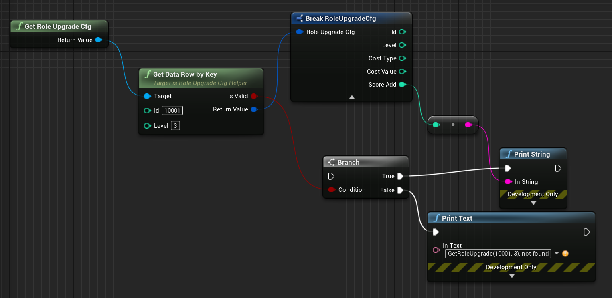

数据输出和数据加载
所有输出的数据的结构都是按照 https://github.com/xresloader/xresloader/blob/master/header/pb_header_v3.proto 的 xresloader_datablocks 的结构。
> 转表功能和二进制数据读取的示例： https://github.com/xresloader/xresloader/tree/master/sample
> 文本和Msgpack数据读取示例： https://github.com/xresloader/xresloader/tree/master/loader-binding
输出类型
在 转表引擎-xresloader 里可以看到，转表工具可以把Excel数据源导出成多种输出。下面列举重要的几种，项目可以根据自己的情况选择一种或几种导出方式。比如如果做Web端的GM工具，可以使用导出成xml或者javascript代码。
导出为协议二进制数据 (推荐)
对应 -t bin 。这是推荐的转出方式，导出的是 xresloader_datablocks 打包后的二进制数据，文件占用最小。任何支持protobuf的语言和开发环境都可以读取。
其中每个 data_block 数据块都对应Excel里的一行数据，里面的数据格式是用户指定的协议打包成二进制后的数据。
导出为json、xml、lua代码等文本数据 (可选)
对应 -t json 、 -t xml 、 -t lua 、 -t js 。 输出的格式也是header+数据body的形式。
Json的数据格式是:
[
{
"count": "(数字)数据条目数量",
"xres_ver":"xresloader版本号",
"hash_code":"文本输出无hash码",
"data_ver":"数据版本号"
}, {
"协议名":[
{"Excel数据Key": "Excel数据内容"},
{"每行一条": "数据内容..."}
]
},
"协议名"
]
Xml的数据格式是:
<?xml version="1.0" encoding="UTF-8"?>
<root>
<!--this file is generated by xresloader, please don't edit it.-->
<header>
<xres_ver>xresloader版本号</xres_ver>
<hash_code>文本输出无hash码</hash_code>
<data_ver>数据版本号</data_ver>
<count>数据条目数量</count>
</header>
<body>
<协议名>每行一条，数据内容
<Excel数据Key>Excel数据内容</Excel数据Key>
</协议名>
</body>
<data_message_type>协议名</data_message_type>
</root>
Lua和Javacript的输出方式和输出设置有关，也很容易看懂，这里就不全部列举了。只列举一个Lua的其中一种输出方式:
-- this file is generated by xresloader, please don't edit it.
return {
[1] = {
xres_ver = "xresloader版本号",
hash_code = "文本输出无hash码",
data_ver = "数据版本号",
count = 0, -- 数据条目数量,
},
[2] = "协议名",
["协议名"] = {
{ ["Excel数据Key"] = "Excel数据内容" }, -- 每行一条，数据内容
}
}
默认情况，文本数据的输出是紧缩的。就没有上面格式列举出的看起来美观，可以通过 --pretty 缩进数量 来设置格式化输出。
导出为Msgpack打包的二进制数据 (可选)
对应 -t msgpack 。 如果不希望引入复杂的加载库，又希望打包出的数据是紧缩的二进制数据。我们提供了打包成msgpack格式的选项。
读取msgpack的工具和库很多，并且效率也很高，语言支持很很好。数据输出结构是：
{
header : {
xres_ver: "版本号字符串",
data_ver: "版本号字符串",
count: 配置记录个数,
hash_code: "hash算法:hash值",
}
data_block: [
{配置内容},
{配置内容},
{配置内容},
],
data_message_type: "协议名"
}
使用Msgpack的话， https://github.com/xresloader/xresloader/tree/master/loader-binding/msgpack 里有python2和node.js的读取示例。
导出为UE支持的CSV或JSON数据和代码 (可选)
xresloader从2.0.0版本开始支持导出UE所支持的CSV或者JSON格式数据，使用 -t ue-csv 或 -t ue-json 可以指定导出的UE支持的数据格式内容。
导出UE数据后，我们还会导出对应加载数据的UE C++类代码，具体可用的控制选项参见 可用的配置项 。
输出的代码有两种模型，一种是扁平模型，会把所有热 repeated 字段和 message 类型平铺到输出的类里。另一种是保留原始结构的嵌套模式。
默认使用使用的是嵌套模式，可以通过 -m UeCfg-RecursiveMode=true/false 来控制是否开启嵌套模式。
xresloader sample ue csv 和 xresloader sample ue json 中的是两种模式的输出代码，可以很容易看出来两者的差异和相应插件的功能。
生成完数据后我们在输出目录生成一个 UnreaImportSettings.json 文件，用于 UEEditor-Cmd 的导入命令。
比如我们UE安装在环境变量 $UNREAL_ENGINE_ROOT 里，工程UE文件位于 $UNREAL_PROJECT_DIR/ShootingGame.uproject 。
然后导出目录是 $XRESLOADER_OUTPUT_DIR 那么我们可以通过
java -client -jar xresloader.jar -t ue-json -o $XRESLOADER_OUTPUT_DIR -f sample-conf/kind.pb \
-m DataSource=role_tables.xlsx|upgrade_10001|3,1 -m ProtoName=role_upgrade_cfg \
-m OutputFile=RoleUpgradeCfg.json -m KeyRow=2 \
-m UeCfg-CodeOutput=$UNREAL_PROJECT_DIR/Source/ShooterGame|Public/Config|Private/Config
来生成配置和代码。如果结构变化，可能需要重新生成工程编译工程的动态库。最后可以再通过UE的命令行工具重新导入资源(以Win64为例)，如果之前导入过编辑器里回自动检测到然后提示刷新：
$UNREAL_ENGINE_ROOT/Engine/Binaries/Win64/UE4Editor-Cmd.exe $UNREAL_PROJECT_DIR/ShootingGame.uproject \
-run=ImportAssets -importsettings=$XRESLOADER_OUTPUT_DIR/UnreaImportSettings.json \
-AllowCommandletRendering -nosourcecontrol
然后需要增加蓝图接口获取Helper
URoleUpgradeCfgHelper* UMyBlueprintFunctionLibrary::GetRoleUpgradeCfg()
{
UClass* clazz = URoleUpgradeCfgHelper::StaticClass();
if (nullptr == clazz) {
return nullptr;
}
return clazz->GetDefaultObject<URoleUpgradeCfgHelper>();
}
就可以在蓝图中使用了:

如果我们希望在Excel里配置引用UE内的资源文件，可以使用 org.xresloader.ue.ue_type_name 插件和 org.xresloader.ue.ue_type_is_class 插件。
前者会把UE的输出代码转为 TSoftObjectPtr<ue_type_name> 来指向UE内的资源，后者会把UE的输出代码转为 TSoftClassPtr<ue_type_name> 来指向UE内的类型。
比如我们配置字段:
message monster_role {
option (org.xresloader.ue.helper) = "helper";
option (org.xresloader.msg_description) = "怪物角色表";
int32 monster_id = 1 [ (org.xresloader.ue.key_tag) = 1 ];
string pawn_class = 13 [ (org.xresloader.ue.ue_type_name) = "APawn", (org.xresloader.ue.ue_type_is_class) = true, (org.xresloader.field_description) = "机器人Pawn类型" ]; // 默认的蓝图类
}
那么我们可以在Excel中配置:
怪物ID |
默认的蓝图类 |
|---|---|
monster_id |
pawn_class |
2001 |
Blueprint’/Game/Blueprints/Pawns/BotPawnDemo.BotPawnDemo_C’ |
2002 |
Blueprint’/Game/Blueprints/Pawns/BotPawnDemo_range.BotPawnDemo_range_C’ |
2003 |
Blueprint’/Game/Blueprints/Pawns/BotPawn_Melee.BotPawn_Melee_C’ |
导出枚举类型成代码 (可选)
对应 -c 然后可以使用 -t json 、 -t xml 、 -t lua 、 -t js 、 -t ue-csv 、 -t ue-json 来指定按哪种方式输出枚举量。
比如把protobuf协议里的枚举输出成Lua代码，kind.proto 文件：
import "xresloader.proto";
// 常量类型
enum game_const_config {
option allow_alias = true;
EN_GCC_UNKNOWN = 0;
EN_GCC_PERCENT_BASE = 10000;
EN_GCC_RANDOM_RANGE_UNIT = 10;
EN_GCC_RESOURCE_MAX_LIMIT = 9999999;
EN_GCC_LEVEL_LIMIT = 999;
EN_GCC_SOLDIER_TYPE_MASK = 100;
EN_GCC_ACTIVITY_TYPE_MASK = 1000;
EN_GCC_FORMULAR_TYPE_MASK = 10;
EN_GCC_SCREEN_WIDTH = 1136;
EN_GCC_SCREEN_HEIGHT = 640;
EN_GCC_CAMERA_OFFSET = 268;
}
// 货币类型
enum cost_type {
EN_CT_UNKNOWN = 0;
EN_CT_MONEY = 10001 [(org.xresloader.enum_alias) = "金币"];
EN_CT_DIAMOND = 10101 [(org.xresloader.enum_alias) = "钻石"];
}
// 这个message用于示例下面导出协议描述，对导出枚举数据无意义
message role_upgrade_cfg {
option (org.xresloader.ue.helper) = "helper";
option (org.xresloader.msg_description) = "Test role_upgrade_cfg with multi keys";
uint32 Id = 1 [ (org.xresloader.ue.key_tag) = 1000 ];
uint32 Level = 2 [ (org.xresloader.ue.key_tag) = 1 ];
uint32 CostType = 3 [ (org.xresloader.verifier) = "cost_type", (org.xresloader.field_description) = "Refer to cost_type" ];
int32 CostValue = 4;
int32 ScoreAdd = 5;
}
Lua目标代码（标准形式）:
-- this file is generated by xresloader, please don't edit it.
local const_res = {
game_const_config = {
EN_GCC_SCREEN_WIDTH = 1136,
EN_GCC_SCREEN_HEIGHT = 640,
EN_GCC_UNKNOWN = 0,
EN_GCC_CAMERA_OFFSET = 268,
EN_GCC_FORMULAR_TYPE_MASK = 10,
EN_GCC_LEVEL_LIMIT = 999,
EN_GCC_RESOURCE_MAX_LIMIT = 9999999,
EN_GCC_SOLDIER_TYPE_MASK = 100,
EN_GCC_PERCENT_BASE = 10000,
EN_GCC_RANDOM_RANGE_UNIT = 10,
EN_GCC_ACTIVITY_TYPE_MASK = 1000,
},
cost_type = {
EN_CT_DIAMOND = 10101,
EN_CT_MONEY = 10001,
EN_CT_UNKNOWN = 0,
},
}
return const_res
对于一些特殊的Lua环境（比如Unity中）可能希望按Lua 5.1的方式加载模块，那么我们也可以使用特殊选项来更换导出方式，比如使用 --lua-module ProtoEnums.Kind 后输出如下:
module("ProtoEnums.Kind", package.seeall)
-- this file is generated by xresloader, please don't edit it.
local const_res = {
game_const_config = {
EN_GCC_SCREEN_WIDTH = 1136,
EN_GCC_SCREEN_HEIGHT = 640,
EN_GCC_UNKNOWN = 0,
EN_GCC_CAMERA_OFFSET = 268,
EN_GCC_FORMULAR_TYPE_MASK = 10,
EN_GCC_LEVEL_LIMIT = 999,
EN_GCC_RESOURCE_MAX_LIMIT = 9999999,
EN_GCC_SOLDIER_TYPE_MASK = 100,
EN_GCC_PERCENT_BASE = 10000,
EN_GCC_RANDOM_RANGE_UNIT = 10,
EN_GCC_ACTIVITY_TYPE_MASK = 1000,
},
cost_type = {
EN_CT_DIAMOND = 10101,
EN_CT_MONEY = 10001,
EN_CT_UNKNOWN = 0,
},
}
game_const_config = const_res.game_const_config
cost_type = const_res.cost_type
于导出的代码，可以通过 --pretty 缩进数量 来设置格式化输出，上面的输出使用的都是 --pretty 2 。
其他语言和格式导出选项也类似上面的Lua的结构，具体请参考输出的文件内容加载。
导出协议描述成代码 (可选)
对应 -i 然后可以使用 -t json 、 -t xml 、 -t lua 、 -t js 、 -t ue-csv 、 -t ue-json 来指定按哪种方式输出枚举量。
比如把上述protobuf协议里的描述输出成Lua代码，协议文件见 kind.proto
Lua目标代码（标准形式）:
-- this file is generated by xresloader, please don't edit it.
local const_res = {
files = {
{
enum_type = {
cost_type = {
name = "cost_type",
value = {
EN_CT_DIAMOND = {
name = "EN_CT_DIAMOND",
number = 10101,
options = {
enum_alias = "钻石",
},
},
EN_CT_MONEY = {
name = "EN_CT_MONEY",
number = 10001,
options = {
enum_alias = "金币",
},
},
},
},
game_const_config = {
name = "game_const_config",
options = {
allow_alias = true,
},
},
},
message_type = {
role_upgrade_cfg = {
field = {
CostType = {
name = "CostType",
number = 3,
options = {
field_description = "Refer to cost_type",
verifier = "cost_type",
},
type_name = "UINT32",
},
Id = {
name = "Id",
number = 1,
options = {
key_tag = 1000,
},
type_name = "UINT32",
},
Level = {
name = "Level",
number = 2,
options = {
key_tag = 1,
},
type_name = "UINT32",
},
},
name = "role_upgrade_cfg",
options = {
helper = "helper",
msg_description = "Test role_upgrade_cfg with multi keys",
},
},
},
name = "kind.proto",
package = "",
path = "kind.proto",
},
},
}
return const_res
同样,对于一些特殊的Lua环境（比如Unity中）可能希望按Lua 5.1的方式加载模块，那么我们也可以使用特殊选项来更换导出方式，比如使用 --lua-module ProtoOptions.Kind 。
输出的代码或文本同样可以通过 --pretty 缩进数量 来设置格式化输出，上面的输出使用的都是 --pretty 2 。
xresloader sample 中的 proto_v3/kind_option.js , proto_v3/kind_option.lua , proto_v3/kind_option.mod.lua 或 中的 proto_v2/kind_option.js , proto_v2/kind_option.lua , proto_v2/kind_option.mod.lua 有更多的示例。
其他语言和格式导出选项也类似上面的Lua的结构，具体请参考输出的文件内容加载。
Proto v2和Proto v3
转表工具同时支持proto v2和proto v3，但是转出是使用的proto v3模式。而对于proto v2和proto v3仅在数字类型的 repeated 字段上有些许区别。
详见： https://developers.google.com/protocol-buffers/docs/proto3#specifying-field-rules
简单地说，就是proto v2里数字类型的 repeated 字段默认是 [ packed = false ] 。打包结构是每个项目一个Key-Value数据对。
而在proto v3里是 [ packed = false ] 。打包结构是Key-Value个数N，而后紧挨着N个Value。
这可能导致转出的数据无法正常读取。解决方法也很简单，那就是对数字类型的 repeated 字段手动指定是否是packed。如：
message arr_in_arr {
optional string name = 1;
repeated int32 int_arr = 2 [ packed = true ];
repeated string str_arr = 3;
}
或proto v3版本。
message arr_in_arr {
string name = 1;
repeated int32 int_arr = 2 [ packed = true ];
repeated string str_arr = 3;
}
数据加载
前面小节我们大致展示了转出数据的结构，以此比较容易理解加载的方式。本小节则是对一些环境和语言的简单加载库。
方式-1(推荐): （推荐）使用 xres-code-generator 生成解析代码(C++/Lua)
对于C++、Lua和C#，我们推荐使用 xres-code-generator 生成解析代码。（未来会开发更多的语言支持）。详见： 使用 xres-code-generator 生成解析代码 。
方式-2(可选): 使用C++加载二进制数据
此加载方式需要上面的 导出为协议二进制数据 (推荐)
在 快速上手-方式.1: 使用读取库解析 里我们已经给出了这种加载方式的具体使用，这里不再复述。 这里提供的方式也支持protobuf的lite模式。
方式-3(可选): 使用lua-pbc加载二进制数据
此加载方式需要上面的 导出为协议二进制数据 (推荐)
对于一些中使用lua的项目，也可以选择使用 pbc 来加载数据。 我们在 https://github.com/xresloader/xresloader/tree/master/loader-binding/pbc 有使用pbc进行加载的manager封装。 在 https://github.com/owent-utils/lua/tree/master/src/data 里有对多项数据集的封装。这两部分都依赖 https://github.com/owent-utils/lua 仓库里提供的utility层。
简要的加载代码如下:
-- 加载lua加载器
local class = require('utils.class')
local loader = require('utils.loader')
-- 必须保证pbc已经载入
local pbc = protobuf
pbc.register(io.open('pb_header.pb', 'rb'):read('a')) -- 注册转表头描述文件
pbc.register(io.open('用户协议.pb', 'rb'):read('a')) -- 注册转表协议描述文件
local cfg = loader.load('data.pbc_config_data_set')
-- 设置路径规则 (一定要带一个%s)
-- 当读取协议message类型为PROTO的配置时，实际查找的协议名称为string.format(rule, PROTO)
-- 比如protobuf的package名称是config,那么这里rule填 config.%s
cfg:set_path_rule('%s')
-- 设置配置列表加载文件
-- cfg:set_list('data.conf_list') -- cfg:reload() 会在清空配置数据后执行require('data.conf_list')
简要的配置清单代码（ data/conf_list.lua ）如下:
local class = require('utils.class')
local loader = require('utils.loader')
local cfg = loader.load('data.pbc_config_data_set')
-- role_cfg, 第二个参数是个函数，返回key，这样读入的数据可以按key-value模式组织起来
cfg:load_buffer_kv('role_cfg', io.open('role_cfg.bin', 'rb'):read('a'), function(k, v)
return v.id or k
end)
-- 第三个参数是个别名
cfg:load_buffer_kv('role_cfg', io.open('role_cfg.bin', 'rb'):read('a'), function(k, v)
return v.id or k
end, 'alias_name')
-- 这后面的时读取，不是加载
-- 别名和非别名的数据一样的
vardump(cfg:get('role_cfg'):get(10002)) -- dump id=10002的role_cfg表的数据
vardump(cfg:get('alias_name'):get(10002)) -- dump id=10002的role_cfg表的数据
-- 直接读取里面的字段
print(string.format('kind id=%d, name=%s, dep_test.name=%s', kind.id, kind.name, kind.dep_test.name))
方式-4(可选): 使用C#和DynamicMessage-net加载二进制数据
此加载方式需要上面的 导出为协议二进制数据 (推荐)
为了方便Unity能够不依赖反射动态获取类型和读取配置，我们提供了 DynamicMessage-net 项目。 这个项目依赖 protobuf-net 的底层。 详见项目主页: https://github.com/xresloader/DynamicMessage-net
方式-5(可选): 加载msgpack文本数据
此加载方式需要上面的 导出为Msgpack打包的二进制数据 (可选)
Msgpack的支持库语言和库很多，我们就不依依列举了。我们有一些python和node.js上的简单示例可以参见 https://github.com/xresloader/xresloader/tree/master/loader-binding/msgpack 。
方式-6(可选): 使用node.js加载javascript文本数据
此加载方式需要上面的 导出为json、xml、lua代码等文本数据 (可选)
把配置输出javascript代码的时候，我们支持Node.js模式和AMD模式。
比如，xresloader sample 中导出的 role_cfg.n.js 。我们可以通过以下代码加载：
const role_cfg_block = require('./role_cfg.n');
const role_cfg_header = role_cfg_block.role_cfg_header; // 数据头信息，header
const role_cfg = role_cfg_block.role_cfg; // 数据集合，Ayyar类型
// 读取数据
console.log(`we got ${role_cfg_header.count} rows, data version: ${role_cfg_header.data_ver}`);
for (const i in role_cfg) {
if (role_cfg[i].id === 10001) {
console.log('================= print data with id = 10001 =================');
console.log(role_cfg[i]);
}
}
详见： https://github.com/xresloader/xresloader/tree/master/loader-binding/javascript
方式-7(可选): 使用lua加载导出的枚举类型
上面 导出枚举类型成代码 (可选) 提到，我们可以把一些枚举类型放在proto文件里统一维护，然后不同的使用者导出成不同目标语言的代码。
而对于protobuf没有原生支持的语言，我们支持导出 lua 、 javascript 、 xml 或 json 辅助我们使用。
比如上面两种Lua导出，我们可以直接通过Lua脚本加载：
local const_enum = require('kind_const')
print('game_const_config.EN_GCC_PERCENT_BASE = ' .. const_enum.game_const_config.EN_GCC_PERCENT_BASE)
function dump_all_enum (pv, ident)
for k, v in pairs(pv) do
if string.sub(k, 0, 1) ~= '_' and 'table' == type(v) then
print(string.format('%s%s = {', ident, k))
dump_all_enum(v, ident .. ' ')
print(string.format('%s}', ident))
else
print(string.format('%s%s = %s,', ident, k, v))
end
end
end
dump_all_enum(const_enum, '')
让我们再来看看Lua 5.1的module模式的枚举类型加载：
require('kind_const_module')
print('game_const_config.EN_GCC_PERCENT_BASE = ' .. ProtoEnums.Kind.game_const_config.EN_GCC_PERCENT_BASE)
function dump_all_enum (pv, ident)
for k, v in pairs(pv) do
if string.sub(k, 0, 1) ~= '_' and 'table' == type(v) then
print(string.format('%s%s = {', ident, k))
dump_all_enum(v, ident .. ' ')
print(string.format('%s}', ident))
else
print(string.format('%s%s = %s,', ident, k, v))
end
end
end
dump_all_enum(ProtoEnums.Kind, '')
其他语言和格式的加载请参考输出文件。